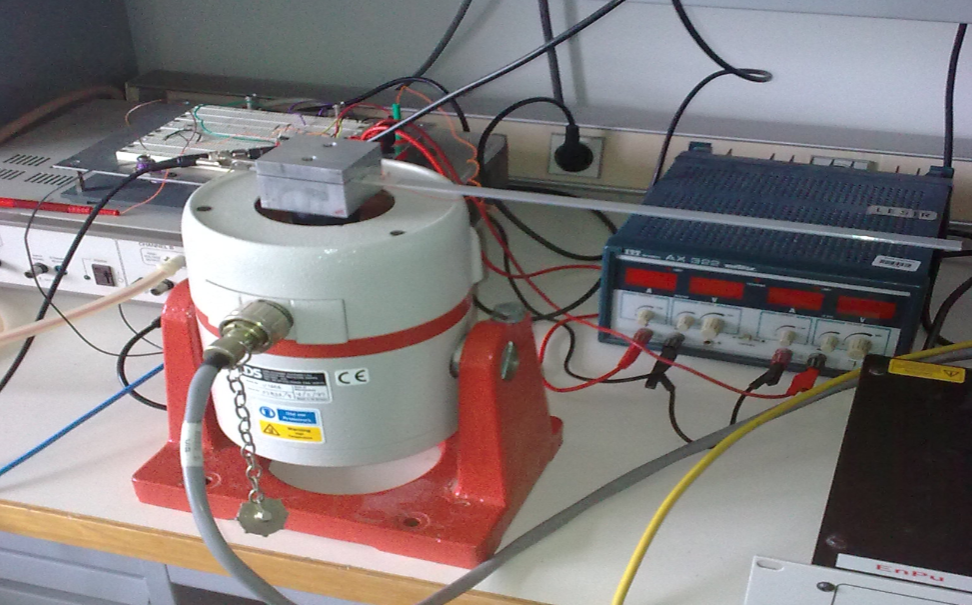

Instantanés
Le devenir des étudiants du DER
Sur la période 2019 - 2022, le taux de poursuite en thèse est de plus de 90%. La répartition par grandes thématiques est donnée ci-dessous :
La conversion d'énergie
Kesako?
La conversion d’énergie traite de tous les aspects du traitement des énergies avec comme point commun l'électricité,
de la production, du transport, de sa transformation jusqu’à son utilisation. Elle s’appuie donc sur des applications dans les domaines de la production d’énergie,
notamment, les énergies renouvelables mais également dans le domaine du transport durable.
Qu'en enseignons nous?
L’enseignement de la conversion d’énergie se base sur deux piliers : la transmission d’une culture et la formation par l’expérimentation.
L’ENS Paris Saclay et le DER Nikola Tesla est un des garants majeurs quant au maintien d’un savoir faire nécessaire pour le développement des entreprises.
De plus, la transmission de ces savoirs s’appuie fortement sur l’expérimentation des concepts de la physique de la conversion d’énergie jusqu’à l’approche système.
Quels moyens avons nous?
La formation possède deux salles expérimentales permettant des expérimentations dans les domaines de la physique de la conversion d’énergie
(photovoltaïque, turbine hydraulique, …), de l’électronique de puissance et des machines électriques.
M2R associés et laboratoires phases sur la thématique?
La formation s’appuie sur deux masters de l’université Paris Saclay : le M2R PIE (Physique et Ingénierie Electrique) et le M2R EPA (Electrification et propulsion automobile).
La formation se fait en lien étroit avec le laboratoire SATIE de l’ENS Paris Saclay et notamment avec le pôle CSEE (Composants et Systèmes pour l’Energie Electrique).
Exemple de parcours d'étudiants
Théodore Cherrière
SAPHIRE 2016, M1 E3A 2017, M2FESUP PSEE 2018 - Major du concours d'agrégation en SII, M2PIE 2019.
Thèse depuis 2020 au laboratoire SATIE de l'ENS Paris-Saclay : Élaboration d’outils logiciels pour l’optimisation topologique multi-physique des actionneurs électromagnétiques.
Optimisation topologique d’un stator triphasé à partir du rotor simplifié de la BMW i3.
L'automatique
Kesako?
L’automatique enseignée au DER Nikola Tesla regroupe la modélisation et la commande de système physique en vue de leur contrôle.
L’enseignement traite du dimensionnement de correcteurs analogiques (P, PI, PID, LQ, LQG), numériques (polynomial, RST) mais également non linéaires (platitude, grand gains).
De plus, l’étude des observateurs de Kalman est abordé.
Qu'en enseignons nous?
L’enseignement de la thématique se base sur un équilibre entre l’automatique théorique (modélisation et dimensionnement de correcteurs) et
l’automatique pratique (mise en œuvre d’asservissement) au travers de manipulations « systèmes » (robots, hexapodes, asservissement de niveaux de fluide, …)
et de manipulations dédiées (cartes électroniques simulant des systèmes). Cet équilibre entre ces deux aspects est nécessaire pour offrir une formation complète allant
de la théorisation à la mise en place pratique de ces théories.
Quels moyens avons nous?
La formation possède une salle expérimentale dédiée à la mise en pratique de l’automatique permettant de mettre en œuvre des systèmes ou des manipulations dédiées.
M2R associés et laboratoires phases sur la thématique?
La thématique est associée au M2R ATSI de l’université Paris Saclay et aux laboratoires SATIE et LSS.
Exemple de projets d'étudiants

Compensation active d'un élement vibrant par des actionneurs piézoélectriques.